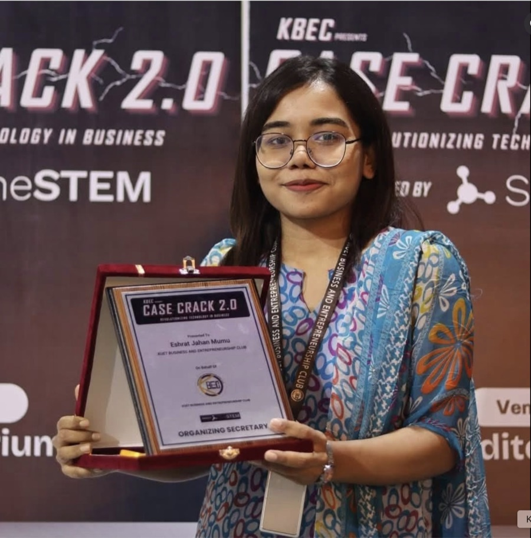

SHEET 01 · B.Sc. Civil Engineering · KUET
Eshrat Jahan Mumu
Civil engineer building knowledge in water resources|

SHEET 01A — SITE ELEVATION
02Profile
Motivated civil engineering graduate eager to gain hands-on experience and explore innovative solutions. Passionate about sustainable development and dedicated to applying knowledge to real-world challenges while enhancing technical skills.
My thesis research sits in water resource engineering, combining GIS, remote sensing and data-driven methods to study urban flooding, heat islands and groundwater.
0CGPA / 4.00
0Research works
0Industrial attachments
0Leadership roles
03Research & Publications
Wavelet-Fourier network combined with advanced preprocessing techniques for univariate daily rainfall prediction
Land use change dynamics and urban heat island assessment using a Remote Sensing-based approach – a case study for Rajshahi district in Bangladesh
8th International Conference on Advances in Civil Engineering
GIS and RS-based delineation of groundwater recharge potential zone in Bogra using AHP
7th International Conference on Advances in Civil Engineering
04Projects & Field Work
Academic projects & field visits
Green-Blue Roof System
Designed a combined green-blue roof for a residential building in Dhaka, reducing rooftop surface temperature by 3–4 °C for passive cooling and a lower urban heat island effect.
Koko Brick Field Study
Field study at a brick field in Keraniganj, Dhaka.
Soil Reports
Prepared soil investigation reports.
Septic Tank Design
Designed a septic tank for a building.
Runoff Hydrograph
Prepared a runoff hydrograph and peak discharge rate for the northern portion of Dhaka.
Site Inspection
Inspected construction of the new staff quarter at KUET.
Industrial attachments
- 2023Trailing Suction Hopper Dredger (TSHD), Mongla Port Authority
- 2024Multipurpose Cyclone Shelter, Koyra, Khulna
- 2024Rainwater Harvesting System, Koyra, Khulna
- 2024Flexible and rigid pavement inspection, Khulna
05Software & Tools
AutoCAD2D engineering drawing, plan and section drafting, basic civil design visualization
ArcGIS 10.8Spatial analysis, map digitization, geoprocessing, thematic mapping
Google Earth EngineRemote sensing analysis, LULC mapping, time-series analysis
RECARGAGIS-based groundwater recharge potential assessment
Microsoft OfficeExcel, Word, PowerPoint for data analysis, reports and presentations
CanvaTechnical presentations, engineering posters and report design
06Journey
Education
2019 – 2026
B.Sc. in Civil Engineering
Khulna University of Engineering & Technology (KUET), Khulna-9203
CGPA 3.28 / 4.00 · Thesis field: Water Resource Engineering
2017 – 2019
HSC & SSC
Birshreshtha Noor Mohammad Public School & College, Dhaka-1209
HSC GPA 5.00 / 5.00 (2019) · SSC GPA 5.00 / 5.00 (2017)
Leadership
2024 – 25Member SecretaryKUET Research Society (KRS)
2023 – 25Organizing SecretaryKUET Business & Entrepreneurship Club (KBEC)
2024VolunteerReinforce 1.0, Concrete Society of KUET (CSK)
2023Campus DirectorCENNOVATION, Dept. of CEE, Islamic University of Technology (IUT)
2022Organizing CommitteeTEDx KUET
Achievements
1stRunner Up
Truss ChallengeReinforce 1.0, KUET (2024). Structural analysis and problem-solving in a competitive design challenge.
2ndRunner Up
Poster Design Competition1st International Show Your Creativity Challenge (2021).
★Finalist
IdeaQuakes (2020)Jagannath University IT Society. National innovation and entrepreneurship competition.
৳Scholar
Government Technical ScholarshipKUET (2019–2020).
Workshops & activities
- SheSTEM Mentorship Program 2026
- 3 Minutes Thesis Competition 2025
- RCC Component Design with MS Excel (CSK, 2023)
- Mechanics Maestro, CEISMIC, BUET (2023)
- Climate Quiz, Safe Women of Bangladesh (2023)
- AutoCAD Workshop, Civil Alliance KUET (2022)
- Communication Training, ROBOADDA (2022)
- PowerPoint Masterclass, Bohubrihi (2021)
07Contact
Open to opportunities in water resources, GIS and civil engineering. Let's build something together.
References are available on request.